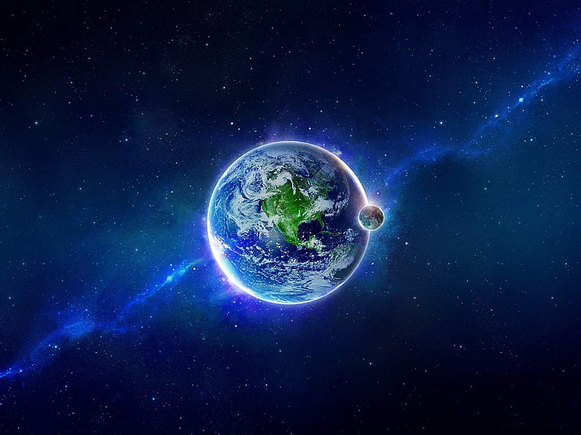

Earth—our beautiful, blue haven floating in space. It's not just the only known planet to support life, but it's also filled with breathtaking wonders, from the depths of the oceans to the heights of the mountains.
The vast diversity of ecosystems and life forms, the ever-changing weather patterns, and the complex interplay of natural systems make it a place of endless fascination and beauty.
Earth is a truly remarkable planet, uniquely positioned as the third rock from the Sun in our solar system. It is the only known celestial body to harbor life, thanks to its hospitable atmosphere and perfect balance of elements. With a diameter of approximately 12,742 kilometers, Earth is the largest terrestrial planet and boasts diverse landscapes ranging from towering mountains and vast deserts to deep oceans that cover 71% of its surface.
| Feature | Description |
|---|---|
| Mass | Approximately 5.972 x 10^24 kilograms |
| Diameter | About 12,742 kilometers |
| Surface Temperature | Ranges from -88°C to 58°C (-126°F to 136°F) |
| Age | Approximately 4.54 billion years |
| Surface Area | About 510.1 million square kilometers |
| Atmosphere | 78% nitrogen, 21% oxygen, 1% other gases |
| Distance from Sun | Approximately 149.6 million kilometers (93 million miles) |
| Water Coverage | About 71% of the surface is covered by water |
To know more about Earth, click below:
EARTH.com